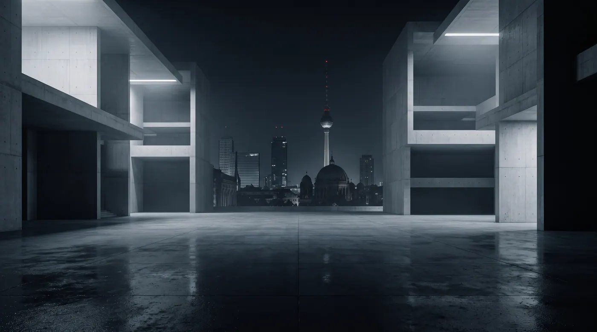
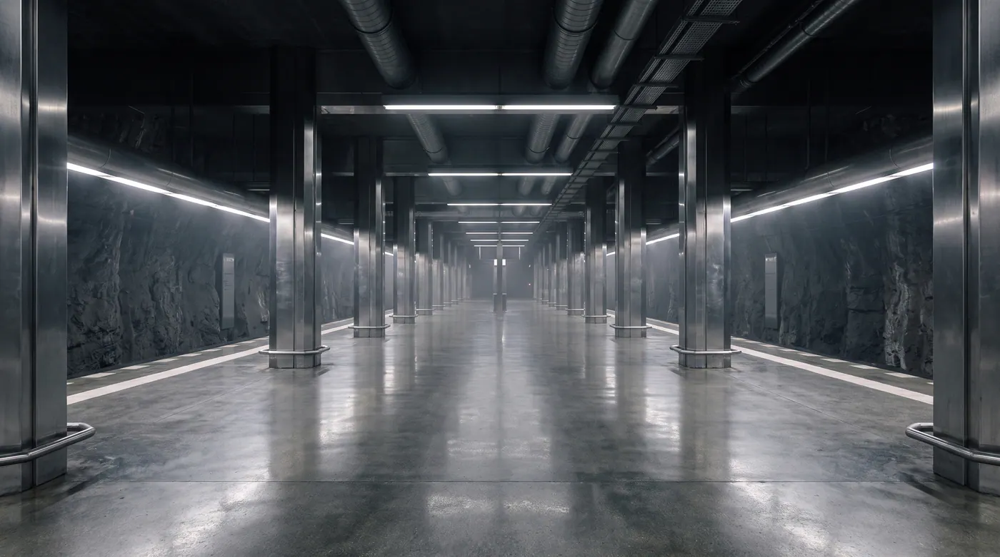
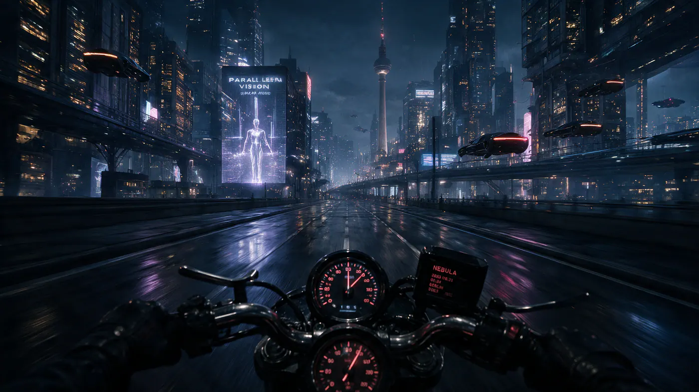
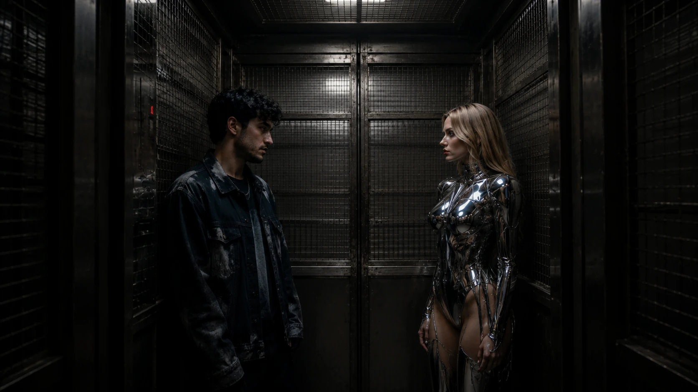
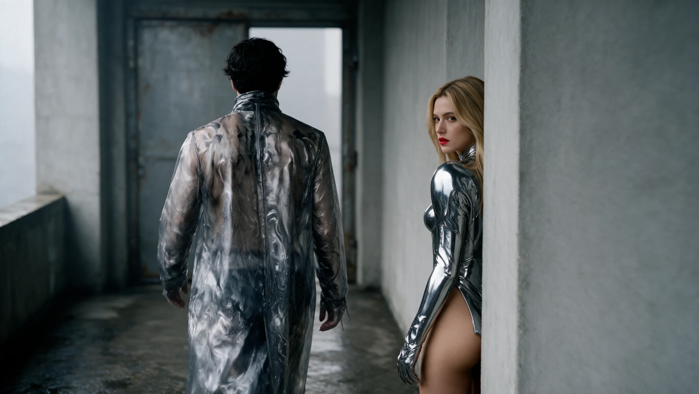
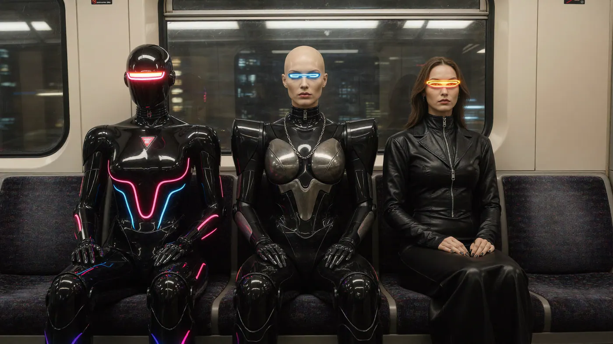
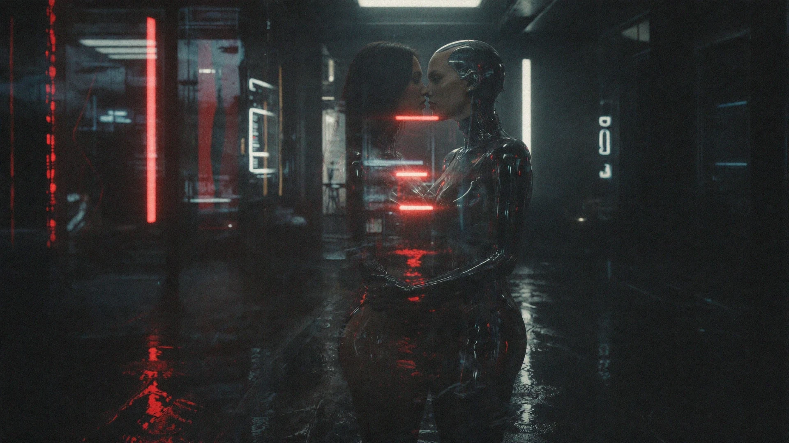

Berlin 2063
A society that transforms its city to protect life above and below ground.

01 / Berlin 2063
Urban Form
Modular buildings designed to descend underground for protection.



02 / Berlin 2063
Urban Systems
Transport, shelters and connections between the surface and underground life.





03 / Berlin 2063
Inhabitants & Robots
Humans and robots share work, shelter, intimacy and everyday life.
View Robots








04 / Berlin 2063
Nightlife
Music, clubs and encounters above and below the city.


Research & world notes
A society living with the possibility of war has transformed its architecture to protect its inhabitants. Modular buildings can descend underground; shelters and transport connect life above and below the surface. Humans and robots share work, intimacy and nightlife. How does everyday life change when the city itself can become a refuge?
Part of Berlin 2063 and Beyond, explored through images, film, sound and material studies.